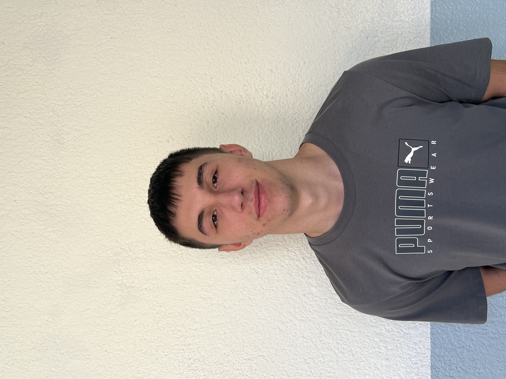

Global Speak Academy (TR batxillerat)

Administració completa d'infraestructura de xarxa, configuració de DHCP, DNS, Servidor Web i Firewall, implementat amb Programari Lliure.
Veure Detall del ProjecteSóc estudiant d'ASIX a l'ITB. Aquest portfoli presenta els meus projectes de desenvolupament web i sistemes. El meu objectiu és l'excel·lència en l'administració de xarxes i la innovació constant. Aquí trobaràs la meva feina

Administració completa d'infraestructura de xarxa, configuració de DHCP, DNS, Servidor Web i Firewall, implementat amb Programari Lliure.
Veure Detall del ProjecteDisseny i implementació d'una xarxa òptima, incloent l'estudi de subxarxes.
Veure Detall del ProjecteSi tens alguna proposta de treball i/o col·laboració o vols saber més, envia'm un missatge.